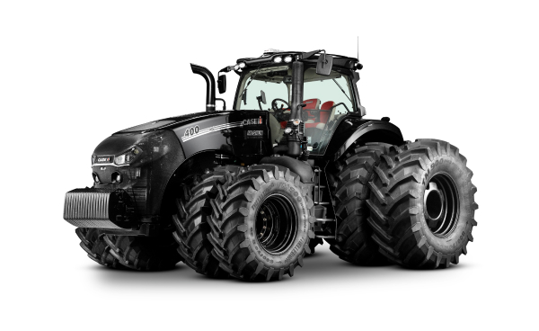

Magnum 400 AFS Connect
CATEGORIAS: CASE IH, TRATORES, AGRONEGÓCIO
O novo **Magnum AFS Connect** chegou para ser o seu grande aliado na evolução da agricultura digital, garantindo o **controle total da sua operação**, em todos os momentos, de onde você e sua equipe estiverem. Com **400** implícito no nome, este trator sempre foi reconhecido pela sua **extraordinária capacidade de tração, grande robustez e alta performance**.
Agora, o Magnum mais uma vez eleva o patamar ao agregar os benefícios e as inovações da **conectividade total**. Isso assegura precisão e eficiência inéditas para sua operação.
Preparado para o Agro Conectado
Os tratores Magnum AFS Connect estabelecem novos parâmetros sobre o que a conectividade e a produtividade podem proporcionar. Você consegue:
- **Monitoramento Remoto:** Gerencie e monitore seu trator à distância.
- **Intervenções a Distância:** Realize intervenções remotas, otimizando o tempo e maximizando os resultados.
- **Tomada de Decisão:** Utilize um conjunto integrado de tecnologias inéditas para usar todos os recursos de agricultura de precisão na hora da tomada de decisão.
Performance e Legado
- **Capacidade de Tração:** Reconhecida como extraordinária, para os trabalhos mais exigentes.
- **Robustez:** Construção robusta que garante durabilidade e confiabilidade no campo.
- **Alta Performance:** Desempenho otimizado para maior produtividade em diversas condições.